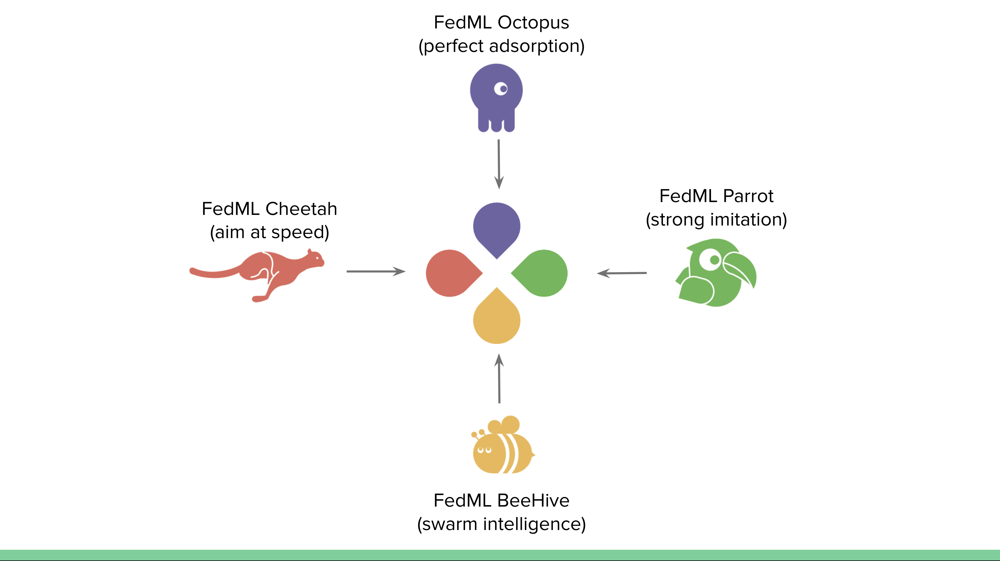
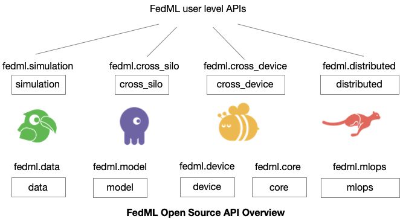
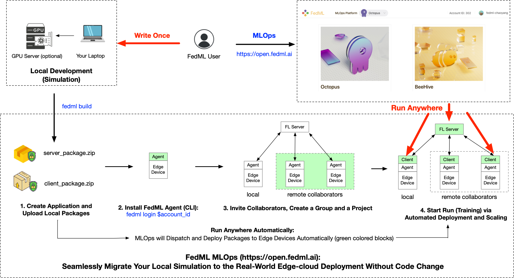
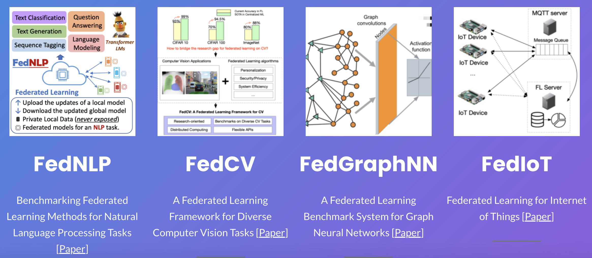

Get Started¶
Thank you for coming! This tutorial is a quick tour of FedML Open Source Library (https://github.com/FedML-AI/FedML) and MLOps Platform (https://open.fedml.ai) with examples in different scenario.
FedML Feature Overview¶

FedML logo reflects the mission of FedML Inc. FedML aims to build simple and versatile APIs for machine learning running anywhere at any scale. In other words, FedML supports both federated learning for data silos and distributed training for acceleration with MLOps and Open Source support, covering cutting-edge academia research and industrial grade use cases.
FedML Cheetah - Accelerate Model Training with User-friendly Distributed Training
FedML Parrot - Simulating federated learning in the real world (1) simulate FL using a single process (2) MPI-based FL Simulator (3) NCCL-based FL Simulator (fastest)
FedML Octopus - Cross-silo Federated Learning for cross-organization/account training, including Python-based edge SDK.
FedML Beehive - Cross-device Federated Learning for Smartphones and IoTs, including edge SDK for Android/iOS and embedded Linux.
FedML MLOps: FedML’s machine learning operation pipeline for AI running anywhere at any scale.
Model Serving: we focus on providing a better user experience for edge AI.
Quick Start for Open Source Library¶
https://github.com/FedML-AI/FedML
Installation¶
To get started, let’s install FedML first.
pip install fedml
For more installation methods, please refer to installing FedML.
A Quick Overview of the Code Architecture¶
In general, FedML source code architecture follows the paper which won Best Paper Award at NeurIPS 2020 (FL workshop). Its original idea is presented at the live video and white paper by FedML co-founder Dr. Chaoyang He.

After March 2022, FedML has been upgraded as an AI company which aims to provide machine learning capability anywhere at any scale. Now the python version of FedML https://github.com/FedML-AI/FedML-refactor/tree/master/python is reorganized as follows:
core: The FedML low-level API package. This package implements distributed computing by communication backend like MPI, NCCL, MQTT, gRPC, PyTorch RPC, and also supports topology management. Other low-level APIs related to security and privacy are also supported. All algorithms and Scenarios are built based on the “core” package.
data: FedML will provide some default datasets for users to get started. Customization templates are also provided.
model: FedML model zoo.
device: FedML computing resource management.
simulation: FedML parrot can support (1) simulating FL using a single process (2) MPI-based FL Simulator (3) NCCL-based FL Simulator (fastest)
cross_silo: Cross-silo Federated Learning for cross-organization/account training
cross_device: Cross-device Federated Learning for Smartphones and IoTs
distributed: Distributed Training: Accelerate Model Training with Lightweight Cheetah
serve: Model serving, tailored for edge inference
mlops: APIs related to machine learning operation platform (open.fedml.ai)
centralized: Some centralized trainer code examples for benchmarking purposes.
utils: Common utilities shared by other modules.
Simplified APIs¶
Our philosophy of API design is to reduce the number of APIs to as few as possible while simultaneously keeping the flexibility.
The figure above shows the high-level overview of the API design. Essentially, each module has a package entry point (e.g., fedml.cross-silo) to manage related APIs, and FedML users can wrapper these APIs to meet their specific demands.
Some high-level integrated APIs are also provided. For example, fedml.run_simulation() is just one-line API to have a quick start.
Now let’s get started with some simple examples. For Simplicity, FedML Parrot (simulator) supports one line API as the following example:
# main.py
import fedml
if __name__ == "__main__":
fedml.run_simulation()
python main.py
You will get the following output:
[FedML-Server(0) @device-id-0] [Sun, 01 May 2022 14:59:28] [INFO] [__init__.py:30:init] args = {'yaml_config_file': '', 'run_id': '0', 'rank': 0, 'yaml_paths': ['/Users/chaoyanghe/opt/anaconda3/envs/mnn37/lib/python3.7/site-packages/fedml-0.7.8-py3.7.egg/fedml/config/simulation_sp/fedml_config.yaml'], 'training_type': 'simulation', 'using_mlops': False, 'random_seed': 0, 'dataset': 'mnist', 'data_cache_dir': './data/mnist', 'partition_method': 'hetero', 'partition_alpha': 0.5, 'model': 'lr', 'federated_optimizer': 'FedAvg', 'client_id_list': '[]', 'client_num_in_total': 1000, 'client_num_per_round': 10, 'comm_round': 200, 'epochs': 1, 'batch_size': 10, 'client_optimizer': 'sgd', 'learning_rate': 0.03, 'weight_decay': 0.001, 'frequency_of_the_test': 5, 'using_gpu': False, 'gpu_id': 0, 'backend': 'single_process', 'log_file_dir': './log', 'enable_wandb': False}
[FedML-Server(0) @device-id-0] [Sun, 01 May 2022 14:59:28] [INFO] [device.py:14:get_device] device = cpu
[FedML-Server(0) @device-id-0] [Sun, 01 May 2022 14:59:28] [INFO] [data_loader.py:22:download_mnist] ./data/mnist/MNIST.zip
[FedML-Server(0) @device-id-0] [Sun, 01 May 2022 14:59:31] [INFO] [data_loader.py:57:load_synthetic_data] load_data. dataset_name = mnist
...
You can also customize the hyper-parameters with fedml_config.yaml. Check this tutorial for one-line example for details.
For flexibility, one-line API can also be expanded into five lines of APIs. To illustrate this, now let’s switch to FedML Octopus (cross-silo federated learning) as example (Source code: https://github.com/FedML-AI/FedML/tree/master/python/examples/cross_silo/mqtt_s3_fedavg_mnist_lr_example).
In this example, the FL Client APIs are as follows:
import fedml
from fedml.cross_silo import Client
if __name__ == "__main__":
args = fedml.init()
# init device
device = fedml.device.get_device(args)
# load data
dataset, output_dim = fedml.data.load(args)
# load model
model = fedml.model.create(args, output_dim)
# start training
client = Client(args, device, dataset, model)
client.run()
With these APIs, you only need to tune the hyper-parameters with the configuration file fedml_config.yaml. An example is as follows:
common_args:
training_type: "cross_silo"
random_seed: 0
data_args:
dataset: "mnist"
data_cache_dir: "./../../../data"
partition_method: "hetero"
partition_alpha: 0.5
model_args:
model: "lr"
model_file_cache_folder: "./model_file_cache" # will be filled by the server automatically
global_model_file_path: "./model_file_cache/global_model.pt"
train_args:
federated_optimizer: "FedAvg"
client_id_list: "[1, 2]"
client_num_in_total: 1000
client_num_per_round: 2
comm_round: 50
epochs: 1
batch_size: 10
client_optimizer: sgd
learning_rate: 0.03
weight_decay: 0.001
validation_args:
frequency_of_the_test: 5
device_args:
worker_num: 2
using_gpu: false
gpu_mapping_file: config/gpu_mapping.yaml
gpu_mapping_key: mapping_default
comm_args:
backend: "MQTT_S3"
mqtt_config_path: config/mqtt_config.yaml
s3_config_path: config/s3_config.yaml
tracking_args:
log_file_dir: ./log
enable_wandb: false
Now let’s run some examples as follows to get a sense of how FedML simplifies federated learning in diverse real-world settings.
FedML Parrot Examples¶
Simulation with a Single Process (Standalone):
sp_fedavg_mnist_lr_example: Simulating FL using a single process in your personal laptop or server. This is helpful when researchers hope to try a quick algorithmic idea in small synthetic datasets (MNIST, shakespeare, etc.) and small models (ResNet-18, Logistic Regression, etc.).
Simulation with Message Passing Interface (MPI):
mpi_torch_fedavg_mnist_lr_example: MPI-based Federated Learning for cross-GPU/CPU servers.
Simulation with NCCL-based MPI (the fastest training):
In case your cross-GPU bandwidth is high (e.g., InfiniBand, NVLink, EFA, etc.), we suggest using this NCCL-based MPI FL simulator to accelerate your development.
FedML Octopu Examples¶
Horizontal Federated Learning:
mqtt_s3_fedavg_mnist_lr_example: an example to illustrate how to run horizontal federated learning in data silos (hospitals, banks, etc.)
Hierarchical Federated Learning:
hierarchical_fedavg_mnist_lr_example: an example to illustrate how to run hierarchical federated learning in data silos (hospitals, banks, etc.). Here
hierarchicalmeans that inside each FL Client (data silo), there are multiple GPUs that can run local distributed training with PyTorch DDP, and then the FL server aggregates globally from the results received from all FL Clients.
FedML Beehive Examples¶
Federated Learning on Android Smartphones
MLOps User Guide¶
Currently, the project developed based on FedML Octopus (cross-silo) and Beehive (cross-device) can be smoothly deployed into the real-world system using FedML MLOps.
FedML MLOps Platform simplifies the workflow of federated learning anywhere at any scale. It enables zero-code, lightweight, cross-platform, and provably secure federated learning. It enables machine learning from decentralized data at various users/silos/edge nodes, without the need to centralize any data to the cloud, hence providing maximum privacy and efficiency.

The above figure shows the workflow. Such a workflow is handled by web UI without the need to handle complex deployment. Check the following live demo for details:

3 Minutes Introduction: https://www.youtube.com/watch?v=E1k05jd1Tyw
A detailed guidance for the MLOps can be found at FedML MLOps User Guide.
More Resource¶
Reference¶
@article{chaoyanghe2020fedml,
Author = {He, Chaoyang and Li, Songze and So, Jinhyun and Zhang, Mi and Wang, Hongyi and Wang, Xiaoyang and Vepakomma, Praneeth and Singh, Abhishek and Qiu, Hang and Shen, Li and Zhao, Peilin and Kang, Yan and Liu, Yang and Raskar, Ramesh and Yang, Qiang and Annavaram, Murali and Avestimehr, Salman},
Journal = {Advances in Neural Information Processing Systems, Best Paper Award at Federate Learning Workshop},
Title = {FedML: A Research Library and Benchmark for Federated Machine Learning},
Year = {2020}
}
Ecosystem¶
FedML Ecosystem facilitates federated learning research and productization in diverse application domains. With the foundational support from FedML Core Framework, it supports FedNLP (Natural Language Processing), FedCV (Computer Vision), FedGraphNN (Graph Neural Networks), and FedIoT (Internet of Things). Please read this guidance for details: https://doc.fedml.ai/starter/ecosystem.html
Publication¶
FedML’s core technology is backed by years of cutting-edge research represented in 50+ publications in ML/FL Algorithms, Security/Privacy, Systems, and Applications.
Vision Paper for High Scientific Impacts
System for Large-scale Distributed/Federated Training
Training Algorithms for FL
Security/privacy for FL
AI Applications A Full-stack of Scientific Publications in ML Algorithms, Security/Privacy, Systems, Applications, and Visionary Impacts
Please check this publication list for details.
Video (Invited Talks)¶
Trustworthy and Scalable Federated Learning. Federated Learning One World Seminar (FLOW). By Salman Avestimehr
Distributed ML for Federated Learning feat. Chaoyang He. Stanford MLSys Seminar. By Chaoyang He
Contributed Talk for FedML Library. Best Paper Award at NeurIPS 2020 Federated Learning Workshop. By Chaoyang He
Join the Community¶
Join our Slack:
https://join.slack.com/t/fedml/shared_invite/zt-havwx1ee-a1xfOUrATNfc9DFqU~r34w
Join our WeChat Group:
Our WeChat group exceeds 200 members, please add the following account and ask him to invite you to join.
FAQ¶
We organize the frequently asked questions at https://github.com/FedML-AI/FedML/discussions. Please feel free to ask questions there. We are happy to discuss on supporting your special demands.
Recruiting¶
FedML is hiring researchers, engineers, product managers, and related interns. If you are interested, please apply at https://fedml.ai/careers.